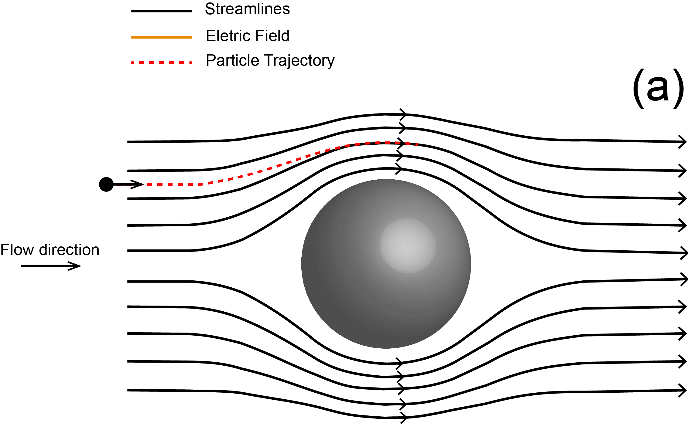

Visão Geral
Filtros são componentes cruciais em inúmeros processos, desde a purificação do ar e da água até aplicações industriais complexas, funcionando para separar partículas indesejadas de um fluido. A eficiência de um filtro depende de fatores como o tamanho das partículas, o material do filtro e as condições de fluxo, e o design ideal busca maximizar a captura mantendo o fluxo desejado. Existem diversos tipos de filtros, utilizando desde barreiras físicas simples até mecanismos mais complexos, como a atração eletrostática, para reter impurezas. Compreender como as partículas interagem com o material filtrante, influenciadas por forças como o movimento do fluido e as interações elétricas, é fundamental para desenvolver filtros mais eficazes e duradouros. Nosso trabalho, por exemplo, focou em como as interações elétricas afetam a captura de partículas em um tipo específico de filtro, utilizando simulações em um meio poroso bidimensional e desconsiderando a gravidade, contribuindo para aprimorar esse entendimento.

(a) Diagrama esquemático ilustrando as linhas de corrente do fluido (linhas contínuas pretas) divergindo ao redor de um grão do filtro, com a linha tracejada vermelha indicando a trajetória de uma partícula suspensa no escoamento através do meio poroso.

(b) As setas laranjas indicam o campo elétrico gerado pelo grão do filtro, positivamente carregado, que gera um potencial atrativo para a partícula negativamente carregada que segue as linhas de corrente. Se a magnitude do potencial eletrostático for suficientemente grande, a pequena partícula pode ser retida na superfície do grão do filtro.

Trajetórias de partículas com grãos de filtro não carregados. As linhas contínuas denotam trajetórias de partículas para um número de Stokes St = 10^−4, obtidas para uma realização do escoamento do fluido através de um filtro de porosidade ϵ = 0.8. O escoamento é da esquerda para a direita, enquanto a escala de cores denota a velocidade do fluido, que aumenta de azul para vermelho.